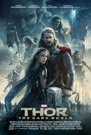
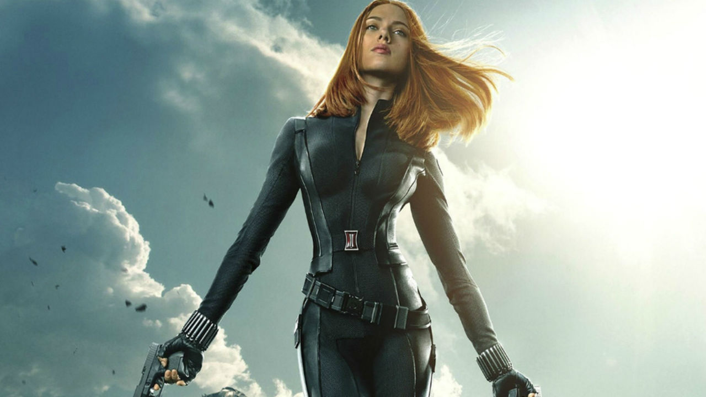

Tras tres meses de someterse a un programa de entrenamiento físico y táctico, encomiendan a Steve Rogers su primera misión como Capitán América. Armado con un escudo indestructible, emprende la guerra contra la perversa organización HYDRA.
Una guerrera extraterrestre de la civilización Kree se encuentra atrapada en medio de una batalla. Con la ayuda de Nick Fury trata de descubrir los secretos de su pasado mientras aprovecha sus poderes para terminar la guerra.
Un empresario millonario construye un traje blindado y lo usa para combatir el crimen y el terrorismo.
Bruce Banner recorre el mundo en busca de un antídoto para librarse de su alter ego. Además tendrá que hacer frente a Emil, un nuevo enemigo, lo que convertirá a Nueva York en el escenario de la última batalla entre las dos criaturas más poderosas.
Con el mundo ahora consciente de que él es Iron Man, el millonario inventor Tony Stark debe forjar nuevas alianzas y confrontar a un enemigo nuevo y poderoso.
Tras desatar una antigua guerra, el codicioso guerrero Thor es desterrado a la Tierra por su padre para que viva entre los hombres y descubra así el verdadero sentido de la humildad. Allí, sin sus poderes, Thor deberá enfrentarse a las fuerzas más oscuras que su mayor enemigo le enviará desde Asgard.
El director de la Agencia SHIELD decide reclutar a un equipo para salvar al mundo de un desastre casi seguro cuando un enemigo inesperado surge como una gran amenaza para la seguridad mundial.
El descarado y brillante Tony Stark, tras ver destruido todo su universo personal, debe encontrar y enfrentarse a un enemigo cuyo poder no conoce límites. Este viaje pondrá a prueba su entereza una y otra vez, y le obligará a confiar en su ingenio.

Thor está preso en el otro extremo del universo. Necesita regresar a tiempo para evitar que la todopoderosa Hela destruya su mundo, pero para escapar de su confinamiento y evitar el apocalipsis tendrá que vencer antes al increíble Hulk en un torneo de gladiadores. 
Capitán América, Viuda Negra y un nuevo aliado, Falcon, se enfrentan a un enemigo inesperado mientras intentan exponer una conspiración que pone en riesgo al mundo.

Un aventurero espacial se convierte en la presa de unos cazadores de tesoros después de robar el orbe de un villano traicionero. Cuando descubre su poder, debe hallar la forma de unir a unos rivales para salvar al universo.
Una poderosa raza alienígena contrata a los Guardianes para que protejan sus valiosas baterías de energía, pero, cuando Rocket las roba, los alienígenas envían a sus tropas de combate a vengarse de los Guardianes. Mientras tratan de escapar con vida, intentan resolver el misterio de los verdaderos orígenes de Peter Quill.
Los Vengadores se reúnen de nuevo y juntan sus fuerzas con las de los recién llegados Quicksilver y Bruja Escarlata para luchar contra un robot maquiavélico llamado Ultrón, el cual Tony Stark creó con el fin de defender la paz, pero resultó defectuoso y ahora pretende exterminar a toda la humanidad.
Un ladrón con la habilidad de encogerse de tamaño pero crecer en fuerza debe sacar su héroe interior y ayudar a su mentor a llevar a cabo un plan para salvar al mundo.

Después de que otro incidente internacional, en el que se ven envueltos los Vengadores, produzca daños colaterales, la presión política obliga a poner en marcha un sistema para depurar responsabilidades.
Al nacer, la Viuda Negra, también conocida como Natasha Romanova, se entrega a la KGB para convertirse en su agente definitivo. Cuando la URSS se separa, el gobierno intenta matarla mientras la acción se traslada a la actual Nueva York. 
Después de morir su padre, T'Challa regresa a su nación, Wakanda. Una vez allí, descubre que tiene un nuevo y terrible enemigo, y T'Challa asume la personalidad de Pantera Negra para salvar no solo al reino de Wakanda, sino a toda la humanidad.

Peter Parker asume su nueva identidad como Spider-Man y regresa a vivir con su tía después de su aventura con los Vengadores. Al volver, mientras sigue bajo la tutela de Tony Stark, descubre que ha surgido un nuevo y despiadado enemigo que pretende destruir todo lo que ama: el Buitre.

Scott Lang vuelve a enfundarse el traje de Ant-Man para pelear codo a codo junto con la Avispa. La misión revela a los dos superhéroes un secreto terrible y los enfrenta a su enemigo más poderoso.
Después de sufrir un accidente, un brillante y arrogante cirujano busca rehabilitarse mediante técnicas alternativas. Sus intentos le llevan a descubrir que ha sido designado para encabezar la lucha contra una fuerza oscura y sobrenatural.
Thor está preso en el otro extremo del universo. Necesita regresar a tiempo para evitar que la todopoderosa Hela destruya su mundo, pero para escapar de su confinamiento y evitar el apocalipsis tendrá que vencer antes al increíble Hulk en un torneo de gladiadores.
Los superhéroes se alían para vencer al poderoso Thanos, el peor enemigo al que se han enfrentado. Si Thanos logra reunir las seis gemas del infinito: poder, tiempo, alma, realidad, mente y espacio, nadie podrá detenerlo.
Los Vengadores restantes deben encontrar una manera de recuperar a sus aliados para un enfrentamiento épico con Thanos, el malvado que diezmó el planeta y el universo.